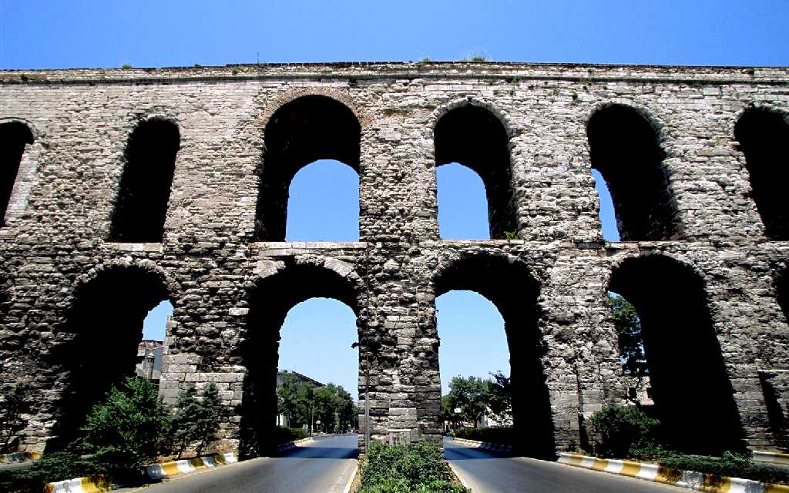
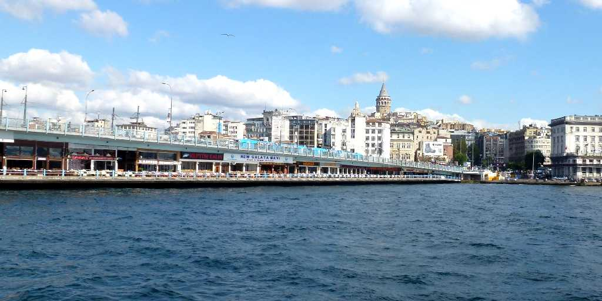
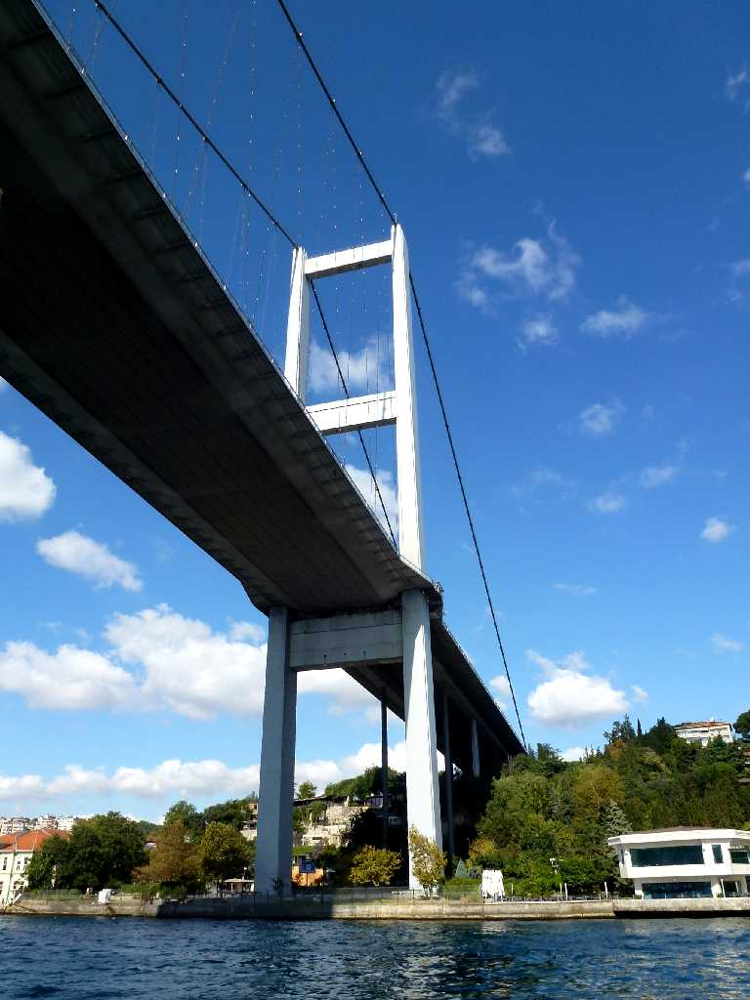
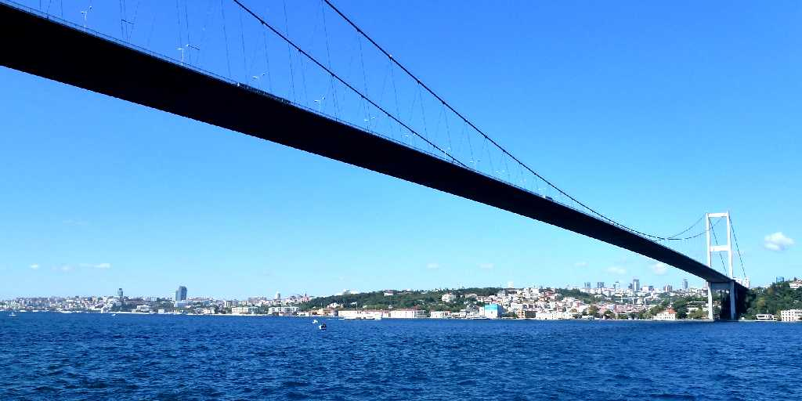

Valens Aqueduct Istanbul
ヴァレンス帝の３６８年に完成したローマ帝国時代のヴァレンス水道橋は全長１ｋｍでビザンチン帝国オスマン帝国まで水を供給していた

Galata Bridge Istanbul
金角湾に架かる可動式の橋で中央は開き両側の下部は飲食店が並び名物のサバサンドを昼食で食る

Bosphorus Strait Cruise Bosphorus Bridge Istanbul
トルコ共和国建国５０周年記念の１９７３年に完成した全長１,５１０ｍのアジアとヨーロッパを結ぶボスポラス大橋

Bosphorus Strait Cruise Fatih Sultan Mehmet Bridge Istanbul
１９８８年完成の日本が建設した全長１,５１０ｍの第二ボスポラス海峡大橋